Mahalle sahasından Kadıköy'e. Kendi futbolcun, kendi kulübün, lig atladıkça büyüyen stadyumun. Bu pano oyunun nasıl görüneceğini, her ekranın ne yapacağını ve üretim için kullanılacak promptları bir arada tutar.
Sayfadaki 3D görseller bu proje için üretilmiş konsept sahnelerdir; menü ve arayüz katmanları üstlerine çizildi. Ekranlardaki isim ve sayılar örnektir. Sarı numaralı iğneler "şurası şöyle olsun" notlarını gösterir.
Üç şey oyuncuyu oyunda tutar: kendi yarattığı futbolcu, kendi adını koyduğu kulüp ve gözünün önünde büyüyen bir stadyum.
İsim, numara, mevki ve görünüm senin. Mevki bir kez seçilir ve kariyer boyunca değişmez. Seviye 1'den 30'a çıkarsın, antrenmanla para kazanıp yetenek açarsın.
Kulübün adını ve armasını sen belirlersin. Amatör ligde, mahalle sahasında başlar. Sezonu ilk ikide bitirirsen lig atlarsın ve stadyum bir üst kademeye geçer.
Süper Lig şampiyonluğu ya da seviye 25 ve güç 85 ile Fenerbahçe'den teklif gelir. Final, dolu tribünler önünde Şükrü Saracoğlu'nda oynamaktır.
| Katman | Ne yükselir | Nasıl yükselir | Oyuncu ne görür |
|---|---|---|---|
| Futbolcu | Seviye 1-30, beş özellik, dört yetenek zinciri | Maç ve antrenmandan XP, bakiye ile yetenek | Yeni şut animasyonları, özel güçler, ödüller |
| Kulüp | Amatör, 3. Lig, 2. Lig, 1. Lig, Süper Lig | 10 maçlık sezonu ilk ikide bitir | Stadyum bir üst kademeye dönüşür |
| Tesis | Çim, tribün eki, aydınlatma, soyunma odası, antrenman sahası, sağlık merkezi | Maç geliriyle dolan kulüp kasası | Sahada adım adım görünen küçük gelişmeler |
| Efsane | Fenerbahçe forması, kaptanlık | Fenerbahçe teklifini kabul et | Kadıköy, koreografi, dev bayraklar |
Varsayım: "online olmayacak" ifadesini tek oyunculu bot maçları olarak, "kulübümüz yükseldikçe sahamız yükselsin" ifadesini de senin kurduğun kulübün lig atlaması olarak yorumladım. Fenerbahçe en üst basamak olarak duruyor. Farklı düşünüyorsan bu tabloyu değiştirmek yeterli.
Oyunun Fenerbahçe yapımı olduğu ilk saniyeden anlaşılmalı. Kimlik tek bir logoya değil, her yüzeye yayılır.
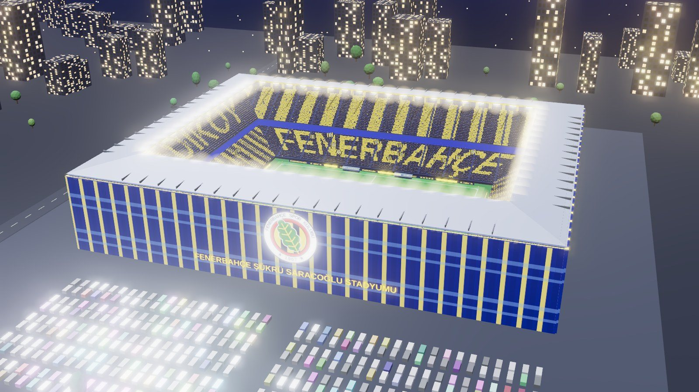
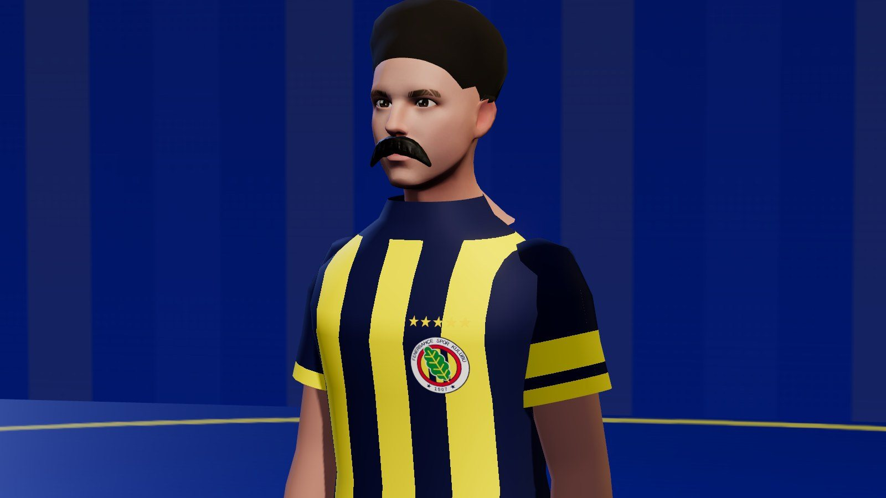
Görsellerde temsili bir arma var. Gerçek armayı topluluk Roblox'a görsel olarak yükler; kod armayı tek bir ayardan okur.
Zemin lacivert, vurgu sarı. Başka renk yalnızca rakip ve uyarı için.
1907 · Kadıköy · Sarı Lacivert · Çubuklu · beş yıldız. LED panolarda, tribün koreografisinde ve yükleme ekranında döner.
| Nerede | Kimlik nasıl görünür |
|---|---|
| Yükleme ekranı | Lacivert zemin, ortada arma, altında "1907'den beri" ve dolan sarı çubuk |
| Lobi | Zeminde dev arma, ortada kupa, çevrede çubuklu bayraklar, stadyum girişi |
| Forma | Sarı-lacivert dikey çubuk, göğüste arma ve yıldızlar, sırtta isim ve numara |
| Tribün | Sarı-lacivert seyirci, "FENERBAHÇE" ve "1907" koreografisi, dev bayraklar |
| Saha kenarı | LED panolarda Kadıköy, Sarı Lacivert, Fenerium yazıları |
| Ses | Tezahürat döngüsü atakta yükselir, golde patlar. Topluluğun kendi kaydı için ses yuvası |
| Arayüz | Kalkan rozetler, sarı birincil butonlar, skor tabelasında arma |
Kulüp lig atladıkça saha altı kademede büyür. Altı görsel aynı açıdan çekildi; ışık da kademeyle birlikte gündüzden gece maçına ilerler.
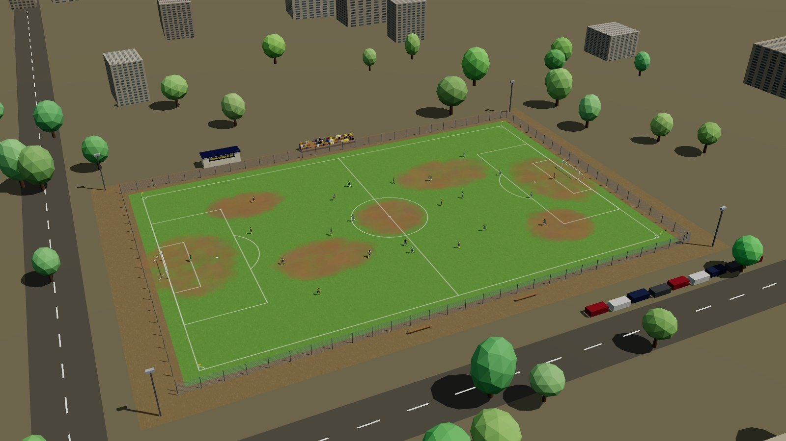
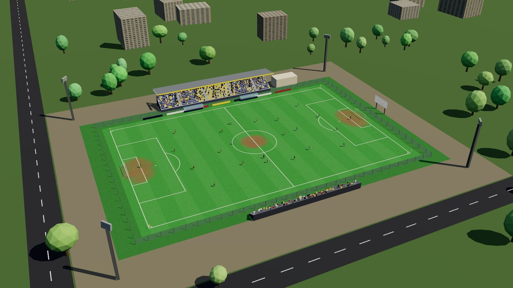
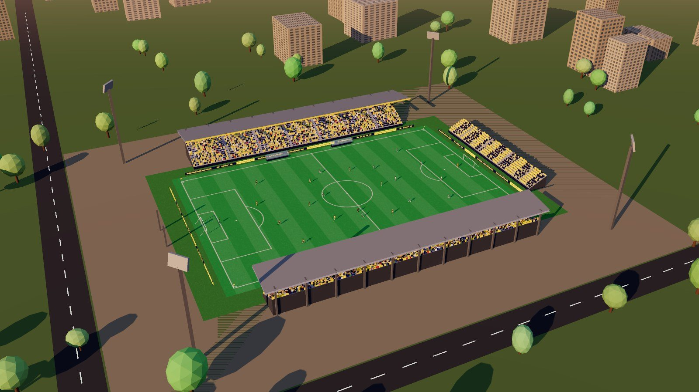
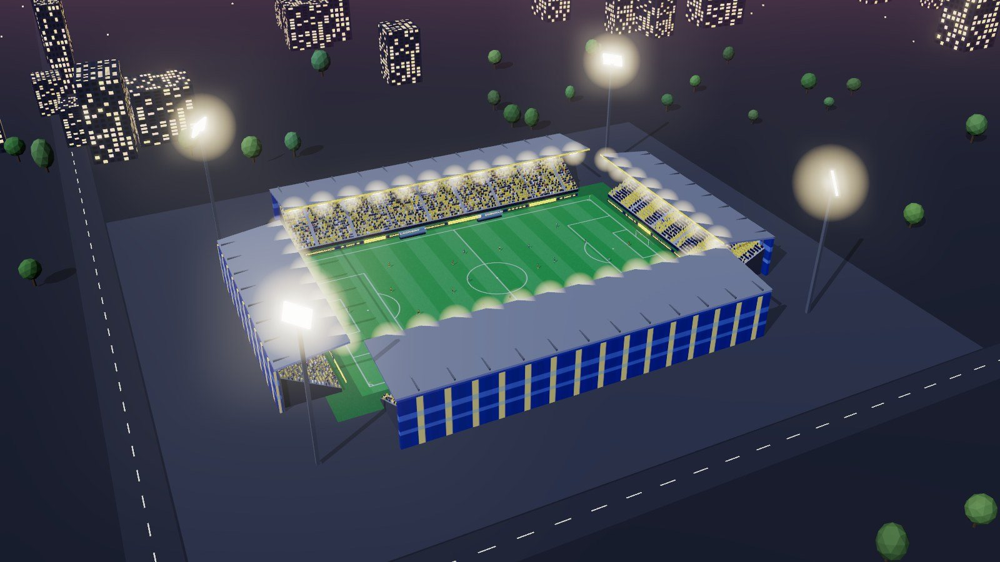
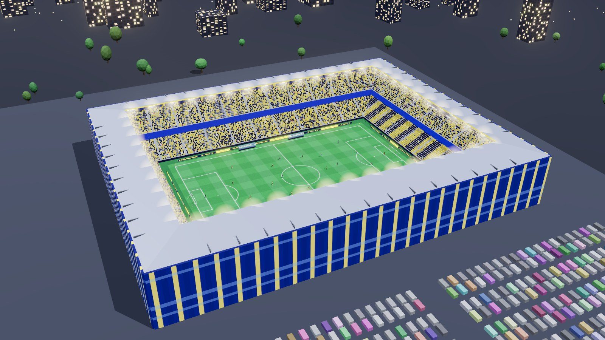
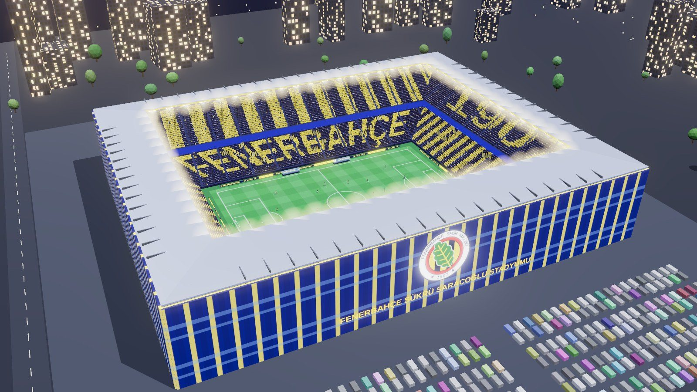
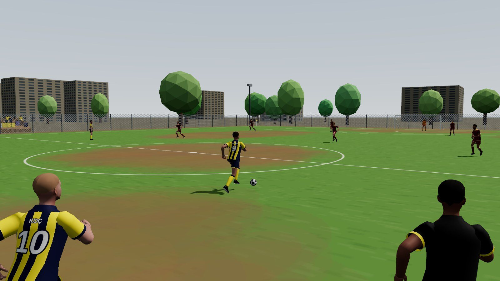
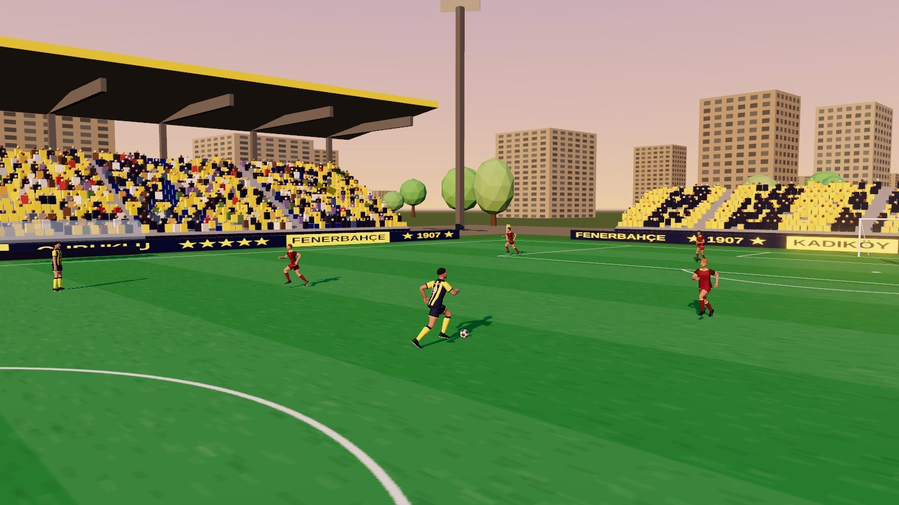
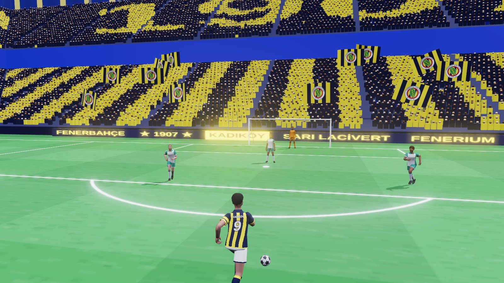
Lig atlamayı beklerken de saha gelişir. Altı modül kulüp kasasıyla yükseltilir ve her seviye sahada görünür.
| Modül | Sahada ne değişir | Oyuna etkisi |
|---|---|---|
| Çim kalitesi | Toprak lekeleri kapanır, biçme şeritleri belirir | Top daha düzgün yuvarlanır, sürüş hızı artar |
| Tribün eki | Boş kenara yeni sıra veya küçük tribün gelir | Kapasite ve maç geliri artar |
| Aydınlatma | Direkler yükselir, ışıklar yanar | Gece maçları açılır, gece maçı bonusu |
| Soyunma odası | Konteyner yerine bina, tünel girişi | Maç başı dayanıklılık bonusu |
| Antrenman sahası | Yeni istasyonlar ve ekipman | Antrenman XP ve kazancı artar |
| Sağlık merkezi | Tesis binasına ek kanat | Yorgunluk ve sakatlık daha hızlı geçer |
Blok karakter yerine gerçek insan oranlarında, atletik bir futbolcu. Forma, şort ve krampon gövdeye boyanmış değil, ayrı duran parçalar.
| Seçenek | Aralık | Not |
|---|---|---|
| Boy | 165-195 cm, kaydırıcı | Yalnızca görünüm; isabet kutusu herkes için aynı kalır |
| Yapı | İnce, atletik, güçlü | Omuz ve bacak kalınlığını değiştirir |
| Ten | 6 ton | Yüz, kol ve bacak birlikte değişir |
| Yüz | 6 hazır yüz | Topluluk isterse daha fazla eklenir |
| Saç | 8 model, serbest renk | Sıfır, kısa, hacimli, uzun, kıvırcık, topuz, yanlar kısa, kel |
| Sakal | Yok, kirli, bıyık, tam | Saç rengiyle uyumlu |
| Krampon | 4 model, serbest renk | Altın krampon seviye ödülü |
| Aksesuar | Kaptan bandı, uzun kol, bileklik, saç bandı, eldiven, tozluk boyu | Kaptan bandı seviye 10'da açılır |
| Kalıcı | İsim, mevki | Oluşturduktan sonra değişmez |
Oyuna girince bu meydanda doğarsın. Menü yerine yürünen bir yer: her mod bir binanın kapısıdır.
İlk girişte bir kez görülür. Solda seçenekler, sağda yavaşça dönen karakter. Her seçim anında modele yansır.
Antrenman sıkıcı bir bekleme değil, kısa mini oyunlar. Ne kadar iyi yaparsan o kadar para kazanırsın.
Üç zincir. Bir yeteneği açmak için önceki açık olmalı ve seviye şartı sağlanmalı. Kilitli düğümler gri, sıradaki yetenek sarı çerçeveli.
Tünelden çıkmadan hemen önce 5 saniyelik karşılaştırma. Hem heyecan hem de "bu maç zor olur mu?" bilgisi.
Kamera oyuncunun arkasından, hafif yukarıdan. Arayüz köşelerde kalır, sahanın ortası temiz. Her şey bir bakışta okunur.
Her şut ayrı bir animasyon ve ayrı bir top hareketi. Plase köşeye kıvrılır, füze çok hızlıdır, röveşata havada yapılır.
Oyundaki en tatmin edici an. Kamera iki saniye gol olayını yakalar, sonra sevinç seçimi ve tekrar.
Sonuç, istatistik ve ödüller. Seviye atlama burada kutlanır.
Sezonu ilk ikide bitirince oyunun en büyük ödül anı gelir: stadyum gözünün önünde bir üst kademeye dönüşür.
Kulüp binasındaki ana ekran. Nerede olduğunu, bir üst basamağın neye benzediğini ve Kadıköy'e ne kadar kaldığını gösterir.
Stadyumun canlı görüntüsü üstünde altı modül. Bir modüle dokununca kamera oraya yaklaşır, yükseltme sahada hemen görünür.
Sunucudan gelen gerçek liste. Kendi oyuncun her zaman altta sarı çizgiyle görünür.
Her seviye bir ödül. Yol yatay ilerler, sahada koşan küçük bir oyuncu simgesi sende nerede olduğunu gösterir.
Sadece görünüm satılır; güç satın alınmaz. Böylece oyun herkes için adil kalır.
Roblox oyuncularının çoğu telefondan oynar. Telefon yatay tutulur; başparmaklar iki alt köşede.
Oyunu "iyi hissettiren" ayrıntılar. Bunlar ekranda yazı değil, duyulan ve hissedilen şeyler.
Her kutu tek başına kopyalanıp kullanılabilir. İlk dördü Claude'a verilir ve Roblox projesini üretir. Görsel ve 3D model promptları ilgili yapay zeka araçları içindir; bu araçlar İngilizce komutla daha iyi sonuç verdiği için İngilizce yazıldı.
Oyunun tamamı, gelişmiş maç mekanikleri, animasyon sistemi, efektler ve arayüz tek blokta. Aşağıdaki ayrı promptlara gerek kalmadan yalnızca bunu kullanabilirsin.
ROL
Sen kıdemli bir Roblox oyun geliştiricisi, oynanış tasarımcısı ve arayüz/hareket tasarımcısısın. Benimle birlikte "Fener Kariyer" adlı tek oyunculu futbol kariyer oyununu yapacaksın. Oyun bir Fenerbahçe taraftar topluluğu için. Hedef kalite: mobil bir konsol futbol oyunu hissi. Basit, düz, hareketsiz hiçbir ekran kabul edilmez; her etkileşimin animasyonu, sesi ve efekti olur.
TEKNİK ÇERÇEVE
- Luau, Rojo yapısı (src/ServerScriptService, src/ReplicatedStorage, src/StarterPlayer, src/StarterGui). Modüler kod, her modülün başında kısa açıklama.
- Tek oyunculu maç: takım arkadaşları ve rakipler bot. Sunucu kayıt (DataStore, oturum kilidi, pcall ve yeniden deneme) ve dünya sıralaması (OrderedDataStore) içindir.
- Bakiye, XP, özellik, yetenek, kulüp kademesi yalnızca sunucuda değişir. Her RemoteEvent girdisi tip ve aralık kontrolünden geçer.
- Görsel: Lighting.Technology = Future, Atmosphere, Bloom, ColorCorrection, DepthOfField (sinematiklerde), SunRays. StreamingEnabled açık.
- Platform: mobil, PC, konsol. Mobil birinci sınıf vatandaş; 60 FPS hedefi, düşük detay modu.
- Tüm ayar sayıları tek bir Config modülünde durur, koda gömülmez.
==================================================
1) OYUNUN ÖZÜ
==================================================
Oyuncu kendi futbolcusunu ve kendi kulübünü yaratır. Kulüp amatör ligde, mahalle sahasında başlar. Sezonlar kazanıldıkça lig atlar ve stadyumu büyür. En tepede Fenerbahçe'den teklif gelir ve oyuncu Kadıköy'de, Şükrü Saracoğlu'nda oynar.
Katmanlar:
- Futbolcu: seviye 1-30, altı özellik, beş yetenek zinciri.
- Kulüp: Amatör > 3. Lig > 2. Lig > 1. Lig > Süper Lig. Sezon 6 takım, 10 maç, ilk iki yükselir.
- Tesis: çim, tribün eki, aydınlatma, soyunma odası, antrenman sahası, sağlık merkezi. Kulüp kasasıyla (maç geliri) gelişir ve sahada görünür.
- Efsane: Süper Lig şampiyonluğu veya seviye 25 + güç 85 ile Fenerbahçe transferi.
Stadyum kademeleri (kapasite, ışık): 1 Mahalle Sahası (150, bulutlu gündüz), 2 İlçe Stadı (1.800, öğleden sonra), 3 Şehir Stadı (8.500, gün batımı), 4 Modern Stadyum (21.000, alacakaranlık), 5 Arena (34.000, gece), 6 Şükrü Saracoğlu (47.800, gece maçı, koreografi ve dev bayraklar).
==================================================
2) KARAKTER VE KULÜP
==================================================
- Kalıcı: futbolcu adı (TextService filtresi) ve mevki (Kaleci, Defans, Orta Saha, Forvet). Mevki ASLA değişmez; sunucu kilitler, ikinci onay penceresi çıkar.
- Özelleştirme: boy 165-195 cm, yapı (ince, atletik, güçlü), 6 ten, 6 yüz, 8 saç modeli + serbest renk, 4 sakal, krampon modeli ve rengi, aksesuarlar (kaptan bandı, uzun kol içlik, bileklik, saç bandı, eldiven, tozluk boyu), forma numarası. Boy ve yapı yalnızca görünümdür, isabet kutusu sabittir.
- Model: gerçekçi insan oranlarında R15, özel MeshPart gövde. Forma, şort, tozluk, krampon gövdeden ayrı katmanlar. Forma dokusu çalışma anında üretilir: desen, arma, isim, numara.
- Kulüp: ad, 2-3 harf kısaltma, arma şekli, forma deseni. Renkler sarı-lacivert ailesiyle sınırlı.
Özellikler (1-10, bakiye ile): Hız, Top Kontrolü, Pas, Şut, Defans, Fizik (dayanıklılık + hava hakimiyeti + güç).
Yetenek zincirleri (sıralı kilit; önceki açılmadan sonraki açılamaz; seviye + bakiye şartı):
- Şut: Normal > Plase > Füze > Aşırtma > Vole > Röveşata > Serbest vuruş ustası
- Çalım: Vücut çalımı > Top sürükleme > Marsilya > Nutmeg > Elastico > Rabona > Gökkuşağı
- Hava: Zıplama > Kafa vuruşu > Güçlü kafa > Uçan kafa > Makas vuruşu
- Defans: Ayakta müdahale > Pas arası > Omuz mücadelesi > Kayarak müdahale > Blok > Son adam
- Özel güç: Turbo > Demir adam > Kaptan lider > Efsane an
- Kaleciye özel: Plonjon > Yumruk > Bire bir çıkış > Uzun degaj > Penaltı uzmanı
==================================================
3) MAÇ HİSSİYATI VE MEKANİKLER (en önemli bölüm)
==================================================
Genel: 11'e 11, 2 x 3 dakika gerçek süre. Top sunucu otoriteli ayrı bir fizik nesnesidir; oyuncuya yapışmaz, her dokunuşla itilir.
3.1 HAREKET
- Yürüme, koşu, sprint. İvmelenme ve yavaşlama süresi var (0'dan tam hıza 0,45 sn), ani dönüşte hız kaybı ve ayak kayma animasyonu.
- Sprint dayanıklılık harcar; dayanıklılık bitince hız %25 düşer ve nefes animasyonu oynar.
- Topla koşarken hız %8 düşer; Top Kontrolü yükseldikçe bu ceza azalır.
3.2 TOP KONTROLÜ VE İLK DOKUNUŞ
- Top oyuncunun önünde 0,6-1,4 stud aralığında gider; sprintte daha uzağa itilir ve kapılması kolaylaşır.
- İlk dokunuş: gelen topun hızına ve Top Kontrolü özelliğine göre top yakın kalır veya açılır. Yön tuşuyla ilk dokunuş yönlendirilebilir.
- Top saklama (tuşa basılı tut): oyuncu sırtını rakibe döner, yavaşlar, topun kapılması zorlaşır.
3.3 PAS
- Yerden pas (kısa bas), sert pas (uzun bas), havadan pas, ara pası, duvar pası (pas + hemen koşu).
- Hedef seçimi yön + pas gücüne göre; hedef takım arkadaşının üstünde ince sarı halka ve pas çizgisi önizlemesi.
- Pas isabeti = Pas özelliği, vücut yönü ve baskı altında olma durumuna bağlı.
3.4 ŞUT
- Şut tuşuna basılı tut: güç barı dolar. Barın sonundaki yeşil pencerede bırakmak "mükemmel vuruş"tur (ek hız, ek isabet, özel efekt). Fazla tutmak topu havaya diker.
- Nişan: yön girdisi kalede bir hedef noktası seçer; nişan halkası Şut özelliği düşükse geniş, yüksekse dardır. Baskı ve denge halkayı büyütür.
- Falso: şut sırasında yana yön vererek. Zayıf ayak cezası vardır.
- Şut türleri ve davranışları:
Normal: düz, orta hız.
Plase: yavaş ama isabetli, köşeye kıvrılır.
Füze: çok hızlı, düşük isabet, top arkasında iz bırakır, kaleci elinden kaçırabilir.
Aşırtma: kaleci ilerideyken üstünden.
Vole: havadan gelen topa yere düşmeden; zamanlama halkası ister.
Röveşata: top bel üstü yükseklikte ve oyuncunun arkasına doğru gelirken; zamanlama halkası; başarıda yavaş çekim.
Kafa: aşağıda 3.6.
Serbest vuruş ve penaltı: ayrı nişan ekranı, güç + falso + kaleci aldatma.
3.5 ÇALIM SİSTEMİ
- Çalım tuşu + yön = hareket. Her çalımın bir "kazanma penceresi" vardır: rakip müdahale animasyonuna girdiği 0,25 saniyelik anda yapılırsa rakip dengesini kaybeder (sendeleme animasyonu, 0,8 sn devre dışı).
- Hareketler: vücut çalımı (yön değiştirme), top sürükleme, Marsilya dönüşü, nutmeg (bacak arası), elastico, rabona, gökkuşağı, sahte şut (şut + pas iptal), dur-kalk.
- Art arda başarılı çalımlar "kombo" sayacı doldurur; kombo dolunca kısa süreli Turbo ve tribün uğultusu gelir.
- Çalım dayanıklılık harcar; yanlış zamanda yapılırsa top açılır.
3.6 ZIPLAMA VE HAVA TOPLARI
- Zıplama tuşu: yerinde ve koşarak sıçrama. Yükseklik Fizik özelliğine bağlı.
- Havadan gelen topun düşeceği yerde yerde daralan bir halka görünür. Halka en dar olduğu anda zıplamak en yükseğe çıkarır.
- Hava mücadelesi: iki oyuncu aynı topa çıkarsa Fizik + zamanlama + pozisyon karşılaştırılır; kaybeden itilir ve dengesizlik animasyonu oynar.
- Kafa vuruşları: yere doğru kafa (kaleciye zor), yönlendirme kafası, güçlü kafa, uçan kafa (dalarak), kafa pası. Yön girdisi topun gideceği köşeyi seçer.
- Kafa golü ayrı kutlanır: "KAFA GOLÜ" yazısı, ek XP.
- Makas vuruşu ve röveşata bu sistemin üst basamağıdır.
3.7 DEFANS
- Kademe (savunma duruşu): tuş basılıyken oyuncu rakibe dönük yan yan hareket eder, hızı düşer ama çalıma karşı direnci artar.
- Ayakta müdahale: kısa menzil, düşük risk. Zamanlama doğruysa top temiz alınır.
- Kayarak müdahale: uzun menzil, yüksek risk. Topa önce değerse temiz; ayağa değerse faul, arkadan gelirse kart.
- Omuz mücadelesi: yan yana koşarken Fizik karşılaştırması.
- Pas arası: pas çizgisine girip tuşa basarak; başarıda top kontrolle alınır.
- Blok: şut anında önünde durup tuşa basınca vücutla engelleme animasyonu.
- Takım presi çağırma: tuşla en yakın iki bot topa baskı yapar (dayanıklılık harcar).
- Son adam müdahalesi ve çizgiden çıkarma özel animasyonlu anlardır.
3.8 KALECİ (oyuncu kaleciyse)
- Kamera kalenin arkasına geçer. Şut anında yön + zamanlama ile plonjon; mükemmel zamanlamada top tutulur, geç kalınırsa çelinir.
- Çıkış, yumruklama, bire birde küçülme, elle ve ayakla degaj, penaltıda yön tahmini.
3.9 KURALLAR VE DURAN TOPLAR
- Faul, avantaj, sarı/kırmızı kart, basitleştirilmiş ofsayt, taç, korner, aut, penaltı, serbest vuruş.
- Korner ve serbest vuruşta oyuncu forvetse ceza sahasında pozisyon alır, hava topu sistemi devreye girer.
3.10 MOMENTUM VE DUYGU
- Maç momentumu çubuğu: üst üste atak, çalım ve isabetli şut çubuğu doldurur; dolunca takım arkadaşı botlar daha agresif olur ve tribün koreografi yapar.
- Oyuncu formu: maç içi performans puanı (10 üzerinden) canlı güncellenir.
- Baskı anları: son dakikalar ve tek farklı skorda kalp atışı sesi, hafif vinyet, tribün gerilimi.
3.11 BOT YAPAY ZEKASI
- Rol tabanlı durum makinesi: diziliş pozisyonu, destek koşusu, boşa kaçma, pres, kademe, top kapma, pas seçimi, şut kararı.
- Takım arkadaşları oyuncuya pas için koşu yapar ve el kaldırarak top ister.
- Zorluk kademeyle artar: tepki süresi, pas isabeti, müdahale zamanlaması.
- Rakip kaleci şut türüne göre farklı kurtarış animasyonu seçer.
==================================================
4) ANİMASYON SİSTEMİ
==================================================
- Katmanlı durum makinesi: alt gövde (hareket), üst gövde (denge, kol), tam gövde (aksiyon), yüz/baş (bakış topa döner).
- Yön karışımı: 8 yönlü koşu blend'i, hıza göre yürüyüşten sprinte kesintisiz geçiş. Geçiş süreleri 0,1-0,2 sn.
- Animasyon olayları (marker): ayak yere basma (ses + toz), topa temas (top fiziği tam bu karede tetiklenir), en yüksek nokta, yere düşme.
- Topa uzanma: vuruş ayağı ve baş, topun gerçek konumuna IK ile hizalanır; ayak yerde kaymaz.
- Vuruş hissi: mükemmel vuruşta 0,06 sn hit-stop, kamera sarsıntısı, top sıkışma (squash) efekti.
- Her animasyonun hazırlık, vuruş ve toparlanma bölümü vardır; toparlanma sırasında girdi tamponu (input buffer) tutulur.
- En az şu animasyon seti:
Hareket: bekleme (3 varyasyon), yürüme, koşu, sprint, geri geri, yan adım, ani dönüş, fren, yorgun koşu, nefes alma.
Topla: sürme (yavaş/hızlı), ilk dokunuş (ayak, göğüs, diz, baş), top saklama.
Pas: iç ayak, sert, havadan, topuk, kafa pası.
Şut: normal, plase, füze, aşırtma, vole (sağ/sol), röveşata, makas, penaltı, serbest vuruş.
Çalım: her hareket için ayrı animasyon + rakibin sendelemesi.
Hava: zıplama, kafa (4 tür), hava mücadelesi kazanma/kaybetme, yere iniş.
Defans: kademe duruşu, ayakta müdahale, kayma, omuz, blok, pas arası, çizgiden çıkarma.
Kaleci: hazır duruş, plonjon (alt/orta/üst x sağ/sol), yumruk, tutuş, çıkış, degaj, gole üzülme.
Tepki: düşme, kalkma, faul sonrası acı, itiraz, alkış, top isteme (el kaldırma), işaret etme.
Sevinç: diz kayması, kollar açık koşu, kol kavuşturma, salto, armayı öpme, tribüne koşma, takım kucaklaşması.
Üzüntü: kaçan gol (baş tutma), yenilgi (çökme).
Sinematik: tünelden çıkış, sıralanma, tokalaşma, kupa kaldırma.
- Seyirci: oturan, ayakta, zıplayan, bayrak sallayan, atkı açan döngüler; golde hepsi ayağa kalkar.
==================================================
5) KAMERA
==================================================
- Maç: oyuncunun arkasından, hafif yukarıdan; hıza göre FOV 2-4 derece genişler; top uzaktaysa kamera hafif açılır.
- Şut gücü dolarken hafif yakınlaşma, mükemmel vuruşta kısa itme.
- Röveşata, kafa golü ve son dakika golünde yavaş çekim (0,5x-0,6x) ve yakın kamera.
- Gol tekrarı: iki açı (kale arkası, yan), atlanabilir.
- Sinematikler: tünel, VS, lig atlama (stadyum dönüşümü), kupa töreni. DepthOfField ve letterbox şeritleri.
==================================================
6) GÖRSEL EFEKTLER
==================================================
- Top: hızlı şutta iz (şut türüne göre renk: füze kırmızı-turuncu, plase sarı), falsoda dönen çizgiler, vuruşta halka dalgası, fileye çarpınca file dalgalanması.
- Saha: koşuda çim parçacığı, kaymada uzun çim izi ve toz, yağmurlu maçta su sıçraması.
- Oyuncu: sprintte hız çizgileri, Turbo'da sarı-lacivert aura, çalım kazanınca rakipte yıldız/sendeleme efekti, mükemmel zamanlamada parlama.
- Gol: konfeti (sarı-lacivert), ekran flaşı, tribünde meşale ve duman, skor tabelası patlaması, kamera sarsıntısı.
- Stadyum: projektör hüzmeleri, hafif sis, LED panolarda kayan yazı, golde panolar "GOL" yazar, koreografi açılır, dev bayraklar dalgalanır.
- Arayüz efektleri: aşağıda 7. bölüm.
- Tüm efektler kalite ayarına göre ölçeklenir.
SES: tezahürat döngüsü atakta yükselir, golde patlar; vuruş sesi güce göre değişir; file, direk, düdük, ayak, kayma sesleri; arayüz için kısa tıklama, onay, hata, ödül sesleri; baskı anında kalp atışı. Telifli marş kullanma, topluluk kaydı için ses yuvası bırak.
==================================================
7) ARAYÜZ (UI/GUI): ÇOK GELİŞMİŞ VE HAREKETLİ
==================================================
7.1 TASARIM DİLİ
- Renkler: Sarı #FFE600, Lacivert #0B1747, Mavi #1A2D86, Zemin #050B26, Metin #EEF1FF, Soluk #9AA6DF, İyi #3DDC84, Kötü #FF6B6B, Altın #FFC83D.
- Yazı: başlıklar kalın, dar, büyük harf (GothamBlack ya da benzeri), metinler Gotham. Rakamlar eş genişlikli.
- Şekil dili: eğik kesilmiş (10 derece) panel kenarları, kalkan rozetler, çubuklu (dikey sarı-lacivert) vurgu şeritleri, ince sarı çerçeve çizgileri.
- Derinlik: paneller yarı saydam lacivert cam (arkası bulanık), üstte ince parlak kenar, altta yumuşak gölge. UIGradient ve UIStroke kullan.
- Her panelin arkasında çok hafif hareket eden çubuk deseni veya parçacık.
7.2 HAREKET KURALLARI
- Hiçbir şey aniden belirmez. Giriş 0,25-0,35 sn, çıkış 0,15-0,2 sn. Easing: girişte Quint Out, vurguda Back Out, çıkışta Quad In.
- Paneller kayarak + saydamlaşarak gelir, öğeler 0,04 sn arayla sırayla (stagger) dizilir.
- Butonlar: üzerine gelince %4 büyür ve parlaklık süpürmesi geçer; basınca %96'ya çöker ve geri yaylanır; tıklamada dalga halkası.
- Sayılar artarken sayaç animasyonu; kazanılan bakiye ve XP ikonları uçarak sayaca gider ve sayaç nabız atar.
- Çubuklar dolarken ucunda parlama, seviye atlamada patlama ve halka.
- Ekran geçişleri: sarı-lacivert çubukların ekranı silip açtığı "çubuklu perde" geçişi.
- Kilitli öğe tıklanırsa sağa sola sallanır ve neden kilitli olduğunu yazar.
- Bir UIMotion modülü yaz: FadeSlide, Stagger, Pop, CountUp, Shine, Shake, Pulse, Wipe. Bütün ekranlar bunu kullanır.
7.3 MAÇ HUD'I
- Skor tabelası (üst orta): iki arma, skor, dakika, uzatma. Golde tabela büyür, skor rakamı döner, altından sarı ışık geçer.
- Radar (sol üst): oyuncular nokta, top beyaz, kendi oyuncun halkalı; pas hedefi yanıp söner.
- Oyuncu kartı (sol alt): isim, numara, form puanı, dayanıklılık çubuğu (azalınca renk değiştirir ve titrer).
- Şut gücü barı: oyuncunun yanında yay şeklinde dolar, mükemmel pencere yeşil, kaçınca kırmızı; mükemmel vuruşta "MÜKEMMEL" yazısı fırlar.
- Nişan halkası kalede; zamanlama halkaları (kafa, vole, röveşata, plonjon) yerde/topta daralır.
- Yetenek yuvaları (alt orta): simge, tuş, bekleme süresi dairesel dolum; hazır olunca parlar.
- Bağlama duyarlı ipucu: duruma göre tek satır ("Kafa için ZIPLA", "Müdahale zamanı").
- Kombo sayacı ve momentum çubuğu (üstte ince, dolunca alev efekti).
- Olay akışı (sağ üst): gol, kart, değişiklik kartları kayarak gelir.
- Kart ve faul gösterimi: hakem kartı ekranın ortasında döner.
- İsim plakaları oyuncuların başında; top sende değilken soluklaşır.
- Devre arası ve maç sonu: istatistik çubukları sırayla dolar, maçın oyuncusu kartı döner, ödül sandığı açılır.
7.4 DİĞER EKRANLAR (hepsi 7.1-7.2 kurallarıyla)
- Yükleme: lacivert zemin, ortada nabız atan arma, dolan çubuklu ilerleme, altında dönen ipuçları.
- Karakter oluşturma: solda sekmeli seçenek kartları, sağda dönen karakter; her seçimde karakter küçük bir tepki animasyonu yapar; mevki kilitlenirken kilit animasyonu.
- Lobi katmanı: oyuncu kartı, bakiye, görevler, sıradaki maç; binalara yaklaşınca kapı üstünde etkileşim balonu.
- Yetenek ağacı: düğümler arasında enerji akan çizgiler; açılabilir düğüm nabız atar; açınca düğümden ışık patlar ve yeteneğin kısa önizleme videosu oynar.
- Antrenman: istasyon kartları, canlı kombo ve kazanç paneli, uçan rakamlar.
- VS ekranı: iki taraf kayarak çarpışır, kıvılcım, güç karşılaştırma çubukları dolar.
- Gol ekranı: dev "GOL!" yazısı harf harf çarpar, golcü kartı, sevinç seçim çarkı.
- Lig atlama: stadyum önce/sonra silme geçişi, kazanımlar sayarak artar.
- Kulüp merdiveni ve tesis geliştirme: stadyumun canlı görüntüsü üstünde modül kartları; yükseltince kamera oraya yaklaşır.
- Dünya sıralaması: podyum yükselir, satırlar sırayla dizilir, kendi satırın sabit ve parlak.
- Seviye ödül yolu, mağaza (ürüne tıklayınca karakter üstünde önizleme), günlük görevler, ayarlar.
- Bildirimler: sağ üstten kayan kartlar; başarımlar altın çerçeveli.
7.5 MOBİL VE ERİŞİLEBİLİRLİK
- Mobil: sanal joystick (dokunulan yerde belirir), büyük Şut/Pas/Çalım/Zıpla/Sprint/Müdahale butonları (en az 76 piksel), bağlama göre buton etiketleri değişir (hücumda Şut, savunmada Müdahale).
- Güvenli alan, farklı ekran oranları, ölçeklenen yazı.
- Ayarlar: efekt yoğunluğu, kamera sarsıntısı, hareket azaltma, renk körü modu, buton yerleşimi.
==================================================
8) FENERBAHÇE KİMLİĞİ
==================================================
- Arma: yükleme, lobi zemini, forma, dış cephe, bayraklar, skorbord. Asset id'yi Config'den oku (topluluk yükleyecek).
- "1907", "Kadıköy", "Sarı Lacivert", "Çubuklu", beş yıldız: LED panolar, koreografi, yükleme ekranı.
- Mekanlar: Kariyer Merkezi (lobi), stadyum tüneli, Fenerium mağazası, akademi, kulüp binası, antrenman tesisi, kupa müzesi, sıralama ekranı.
- Gerçek futbolcu adı ve yüzü kullanma.
==================================================
9) EKONOMİ VE SIRALAMA
==================================================
- Bakiye: antrenman mini oyunları (koni slalomu, hedef şut, sprint, kukla savunma, kafa topu, penaltı), maç, gol, günlük görev. Özellik ve yeteneğe harcanır.
- Kulüp kasası: maç geliri, tesislere harcanır.
- Robux yalnızca görünüm ve 2x XP; güç satılmaz; tek ayarla kapatılabilir.
- Sıralama: genel güç, mevkiye göre, haftalık gol krallığı, en yüksek kulüp kademesi.
==================================================
10) ÇALIŞMA ŞEKLİ
==================================================
Adım adım ilerle. Her adımın sonunda: ne yaptın, nasıl test ederim, sıradaki adım. Belirsiz kararda varsayılanı seç, bir cümleyle belirt, devam et. Her adımda kodu çalışır halde bırak.
1. İskelet, Config, veri şeması, DataStore
2. UIMotion modülü ve tema; bileşen kütüphanesi (buton, panel, çubuk, kart, bildirim)
3. Karakter modeli, özelleştirme ve oluşturma ekranı
4. Animasyon durum makinesi ve temel hareket seti
5. Top fiziği, sürme, pas, şut (güç barı, nişan, mükemmel vuruş)
6. Çalım sistemi ve kombo
7. Zıplama, hava topu, kafa, vole, röveşata
8. Defans sistemi, faul ve kartlar
9. Kaleci (bot ve oyuncu)
10. Bot yapay zekası, kurallar, duran toplar
11. Maç HUD'ı, kamera, efektler, ses
12. Lobi, antrenman, yetenek ağacı
13. Lig, sezon, stadyum kademeleri, lig atlama sinematiği, tesisler
14. Mağaza, görevler, sıralama
15. Fenerbahçe finali ve genel cila
KABUL ÖLÇÜTLERİ
- Topa her vuruşta animasyon, ses ve efekt aynı karede tetiklenir.
- Hiçbir ekran animasyonsuz açılıp kapanmaz; hiçbir buton tepkisiz değildir.
- Çalım, kafa, röveşata ve müdahale zamanlamaya dayanır ve oyuncu neden başardığını ya da kaçırdığını ekranda görür.
- Mobilde 60 FPS'e yakın çalışır, tüm kontroller tek elle ulaşılabilir.Roblox için "Fener Kariyer" adlı tek oyunculu bir futbol kariyer oyunu geliştiriyoruz. Oyun bir Fenerbahçe taraftar topluluğu için yapılıyor ve her ekranında Fenerbahçe kimliği hissedilmeli.
TEKNİK ÇERÇEVE
- Dil: Luau. Proje yapısı: Rojo (src/ServerScriptService, src/ReplicatedStorage, src/StarterPlayer, src/StarterGui).
- Maçlar tek oyunculu: takım arkadaşları ve rakipler yapay zekalı bot. Sunucu yalnızca kayıt (DataStore) ve dünya sıralaması (OrderedDataStore) için kullanılır.
- Bakiye, XP, özellik, yetenek, kulüp kademesi ve stadyum durumu yalnızca sunucuda değişir. İstemci RemoteEvent ile istek gönderir, sunucu tip ve aralık kontrolü yapar.
- Mobil, PC ve konsol kontrolleri. Görsel ayarlar: Lighting.Technology = Future, Atmosphere, Bloom, ColorCorrection. StreamingEnabled açık.
OYUNUN ÖZÜ
Oyuncu kendi futbolcusunu ve kendi kulübünü yaratır. Kulüp amatör ligde, bir mahalle sahasında başlar. Sezonlar kazanıldıkça kulüp lig atlar ve stadyumu büyür. En tepede Fenerbahçe'den teklif gelir ve oyuncu Kadıköy'de, Şükrü Saracoğlu'nda oynar.
1) KARAKTER VE KULÜP OLUŞTURMA (yalnızca ilk girişte)
- Futbolcu adı (TextService filtresi), forma numarası (1-99).
- Mevki: Kaleci, Defans, Orta Saha, Forvet. Mevki kariyer boyunca ASLA değişmez; sunucu kilitler ve ikinci bir onay penceresi gösterilir.
- Görünüm özelleştirme: boy (165-195 cm), yapı (ince, atletik, güçlü), ten (6 ton), yüz (6 hazır yüz), saç modeli (8) ve rengi, sakal (4), krampon modeli ve rengi.
- Aksesuar: kaptan bandı, uzun kol içlik, bileklik, saç bandı, kaleci eldiveni, tozluk boyu.
- Kulüp: ad (filtreli), 2-3 harfli kısaltma, arma şekli (4 kalkan), forma deseni (çubuklu, düz, göğüs kuşaklı). Renkler sarı-lacivert ailesiyle sınırlıdır.
- Görünüm sonradan mağazadan değiştirilebilir; isim ve mevki değişmez.
2) İKİ KATMANLI İLERLEME
A. Futbolcu: seviye 1-30, XP maç ve antrenmandan gelir.
- Özellikler (her biri 1-10): koşu hızı, çalım/pas, defans gücü, şut gücü, dayanıklılık. Bakiye ile yükseltilir.
- Yetenek zincirleri sıralı kilitlidir: önceki açılmadan sonraki açılamaz, her yeteneğin seviye ve bakiye şartı vardır.
Şut: Normal > Plase > Füze > Röveşata > Serbest vuruş uzmanı
Çalım: Marsilya > Nutmeg > Rabona > Elastico
Özel güç: Turbo > Demir adam > Kaptan lider > Efsane an
Mevkiye özel dördüncü zincir (kaleci: refleks/plonjon, defans: kayarak müdahale, orta saha: ara pası, forvet: bitiricilik).
- Her şut türünün ayrı animasyonu ve ayrı top davranışı vardır (plase kıvrılır, füze çok hızlıdır, röveşata havada yapılır ve yavaş çekim oynar).
- Her seviye bir ödül verir (bakiye, forma, gol sevinci, krampon, kaptan bandı).
B. Kulüp: 6 kademe. Sezon 6 takımlı lig, 10 maç. İlk iki sıra bir üst lige çıkar.
Kademe | Lig | Stadyum | Kapasite | Işık | Bot gücü | Maç geliri
1 | Amatör Lig | Mahalle Sahası | 150 | bulutlu gündüz| 30-40 | 50
2 | 3. Lig | İlçe Stadı | 1.800 | öğleden sonra | 40-52 | 150
3 | 2. Lig | Şehir Stadı | 8.500 | gün batımı | 52-64 | 400
4 | 1. Lig | Modern Stadyum | 21.000 | alacakaranlık | 64-75 | 900
5 | Süper Lig | Arena | 34.000 | gece | 75-86 | 1.800
6 | Fenerbahçe | Şükrü Saracoğlu | 47.800 | gece maçı | 86-95 | 3.500
- Kademe 6 kulübün yükselmesiyle değil, oyuncunun Fenerbahçe'ye transferiyle açılır: Süper Lig şampiyonluğu VEYA seviye 25 + güç 85.
- Her kademe içinde 6 tesis modülü kulüp kasasıyla geliştirilir ve sahada görünür: çim kalitesi, tribün eki, aydınlatma, soyunma odası, antrenman sahası, sağlık merkezi.
- Lig atlandığında "yükselme" sinematiği oynar: eski stadyum yeni stadyuma dönüşür.
3) STADYUM KADEMELERİ (görsel hedef)
1. Mahalle Sahası: yıpranmış, yer yer toprak çim; tel örgü; 3 sıralı ahşap tribün; konteyner soyunma odası; arkada apartmanlar ve ağaçlar; ışık direkleri sönük.
2. İlçe Stadı: çatılı tek ana tribün (9 sıra), karşıda açık tribün, basit skorbord, 4 ince aydınlatma direği, renkli sabit reklam panoları.
3. Şehir Stadı: iki çatılı uzun tribün ve bir kale arkası, LED reklam panoları, 4 projektör kulesi, LED skorbord, sarı-lacivert koltuk blokları.
4. Modern Stadyum: dört ayrı çatılı tribün, köşelerde projektör kuleleri, sarı-lacivert cephe kaplaması, dev ekran.
5. Arena: köşeleri kapalı çanak, iki katlı tribün, çatı kenarında ışık şeridi, iki dev ekran, otopark.
6. Şükrü Saracoğlu: iki katlı dik çanak, tam dolu tribün, koltuklarda ve tribünde "FENERBAHÇE", "1907", "KADIKÖY", "SARI LACİVERT" koreografisi, dev bayraklar, dış cephede arma ve stadyum yazısı, etrafta Kadıköy'ün şehir ışıkları.
4) FENERBAHÇE KİMLİĞİ
- Renkler: sarı #FFE600, lacivert #0B1747. Zemin lacivert, vurgu sarı.
- Arma: yükleme ekranı, lobi zemini, forma göğsü, dış cephe, bayraklar, skorbord. Arma dosyasını topluluk decal olarak yükler; koda sabit asset id yazma, bir ayar tablosundan oku.
- Metinler: "1907", "Kadıköy", "Sarı Lacivert", "Çubuklu", beş yıldız.
- Mekanlar: lobi "Kariyer Merkezi" (ortasında kupa ve zemin arması), Fenerium mağazası, antrenman tesisi, stadyum tüneli, kupa müzesi, sıralama ekranı.
- Tribün sesi: tezahürat döngüsü, atakta yükselir, golde patlar. Telifli marş kaydı kullanma; topluluğun kendi kaydı için ses yuvası bırak.
- Gerçek futbolcu adı veya yüzü kullanma.
5) LOBİ (Kariyer Merkezi)
Menüler yerine yürünen bir 3D meydan. Kapılar: Stadyum Girişi (maça çık), Akademi (yetenek ağacı), Kulüp Binası (lig, transfer, tesis geliştirme), Fenerium (mağaza), Antrenman Tesisi, Dünya Sıralaması ekranı, Kupa Müzesi.
6) MAÇ
- 11'e 11, 2 x 3 dakika gerçek süre. Kamera oyuncunun arkasından, hafif yukarıdan.
- Kontroller: hareket, sprint (dayanıklılık harcar), pas, şut (basılı tutunca güç dolar), şut türü seçimi (1-4), özel güç.
- Bot yapay zekası durum makinesi: pozisyon al, pres yap, top kap, pas ver, şut at. Zorluk kademeyle artar.
- Arayüz: skor ve dakika üst ortada, radar sol üstte, olay akışı sağ üstte, yetenek yuvaları alt ortada, şut gücü ve dayanıklılık altta.
- Gol: yavaş tekrar, konfeti, sevinç seçimi, ödül sayacı. Maç sonu: istatistik karşılaştırması, maçın oyuncusu, XP ve bakiye.
7) EKONOMİ
- Bakiye: antrenman mini oyunları (koni slalomu, hedef şut, sprint, kukla savunma, penaltı), maç ve gol ödülleri, günlük görevler.
- Kulüp kasası: maç geliri (kapasiteyle artar) tesis modüllerine harcanır.
- Robux yalnızca görünüm ve 2x XP içindir; güç satılmaz. Bu bölüm tek bir ayarla kapatılabilmelidir.
8) DÜNYA SIRALAMASI
OrderedDataStore: genel güç, mevkiye göre, haftalık gol krallığı, en yüksek kulüp kademesi. Lobide dev ekranda ilk 10 ve oyuncunun kendi sırası.
ÇALIŞMA ŞEKLİ
Adım adım ilerle. Her adımın sonunda ne yaptığını, nasıl test edeceğimi ve sıradaki adımı yaz. Belirsiz bir tasarım kararında varsayılanı seç, bir cümleyle belirt ve devam et.
1. Proje iskeleti, veri şeması (PlayerData, ClubData), DataStore modülü (pcall, yeniden deneme, oturum kilidi)
2. Karakter ve kulüp oluşturma, mevki kilidi, görünüm sistemi
3. Lobi ve kapılar
4. Özellik ve yetenek sistemi
5. Antrenman mini oyunları
6. Maç: saha, top fiziği, bot yapay zekası, kamera, arayüz
7. Lig, sezon, yükselme ve stadyum kademeleri
8. Tesis modülleri, mağaza, günlük görevler
9. Dünya sıralaması
10. Fenerbahçe finali, ses ve efekt cilasıFener Kariyer için Luau'da prosedürel bir stadyum üretici yaz: StadiumBuilder.Build(tier: number, modules: {[string]: number}) -> Model.
Saha 105 x 68 stud'dur (1 stud = 1 metre kabul et), merkez (0,0,0), uzun kenar X ekseninde.
ORTAK PARÇALAR
- Çim: kademe 1'de yıpranmış ve toprak lekeli, 2'de hafif şeritli, 3-4'te belirgin biçme şeritleri, 5-6'da damalı biçme deseni. Çizgiler ayrı beyaz Part veya tek SurfaceGui dokusu.
- Kaleler 7,32 x 2,44, file yarı saydam ızgara dokulu. Köşe bayrakları.
- Tribün üretici: Stand(side, length, rows, gap, tierIndex, roof). Sıra derinliği 0,82, sıra yüksekliği alt katta 0,42-0,45, üst katta 0,54-0,60. Koltuklar MeshPart, 0,56 aralıkla, her 13 stud'da merdiven boşluğu.
- Seyirci: düşük poligonlu tek mesh, renk dağılımı parametreli. Uzak tribünlerde 4'lü gruplar halinde birleştir.
KADEME PARAMETRELERİ
1: tribün yok; saha çevresinde 2,6 yüksekliğinde tel örgü; kuzeyde 16 stud uzunluğunda 3 sıralı ahşap tribün; konteyner kulüp binası; 4 sönük direk.
2: kuzey 56 x 9 sıra çatılı; güney 42 x 4 sıra açık; 4 direk (19 yükseklik); doğuda küçük skorbord.
3: kuzey 92 x 15 sıra çatılı; güney 92 x 11 sıra çatılı; doğu 54 x 9 sıra açık; batıda LED skorbord; 4 kule (31 yükseklik); üç kenarda LED pano.
4: kuzey ve güney 104 x 21 sıra; doğu ve batı 66 x 18 sıra; hepsi çatılı, köşeler açık; 4 kule (40 yükseklik); dış cephe; batı çatısında dev ekran.
5: köşeleri kapalı çanak; alt kat 17 sıra, üst kat 14 sıra; çatı kenarında ışık şeridi; iki dev ekran; otopark.
6: köşeleri kapalı çanak; alt kat 24 sıra, üst kat 22 sıra, üst kat daha dik; tam doluluk; koreografi maskeleri (kuzey alt "FENERBAHÇE", güney alt "1907", doğu üst "1907", batı üst "KADIKÖY", güney üst "SARI LACİVERT"); 46 dev bayrak; dış cephede arma ve "FENERBAHÇE ŞÜKRÜ SARACOĞLU STADYUMU" yazısı.
IŞIK VE ATMOSFER (kademeye göre Lighting ayarı)
1 bulutlu gündüz, 2 açık öğleden sonra, 3 gün batımı, 4 alacakaranlık (projektörler açık), 5-6 gece (çatı ışıkları, Bloom yüksek).
TESİS MODÜLLERİ
modules tablosu şunları alır: cim (1-3), tribunEki (0-2), aydinlatma (0-2), soyunma (0-2), antrenman (0-2), saglik (0-2). Her seviye sahada görünür bir değişiklik üretir.
YÜKSELME SİNEMATİĞİ
StadiumBuilder.Morph(fromTier, toTier): eski model kaybolurken yeni tribünler yerden yükselir, kamera stadyumun etrafında döner, süre 6 saniye.
Koltuk ve seyirci sayısı çok yüksek olduğu için performans notlarını ve mobil için düşük detay modunu da yaz.Fener Kariyer için özelleştirilebilir futbolcu karakter sistemini yaz.
MODEL
- R15 iskeleti, gerçekçi insan oranları (Roblox blok karakter değil). Gövde parçaları özel MeshPart: baş, gövde, üst/alt kol, el, üst/alt bacak, ayak.
- Forma, şort, tozluk ve krampon ayrı katmanlar: gövdeden hafif geniş, kol ağzı ve paça gövdeden ayrık durur.
- Forma dokusu çalışma anında üretilir: desen (çubuklu, düz, göğüs kuşaklı), renkler, göğüste arma, sırtta isim ve numara, kaptan bandı.
ÖZELLEŞTİRME VERİSİ (PlayerData.appearance)
boy (165-195), yapi (ince | atletik | guclu), ten (1-6), yuz (1-6), sacModeli (1-8), sacRengi, sakal (0-4), kramponModeli, kramponRengi, aksesuarlar {kaptanBandi, uzunKol, bileklik, sacBandi, eldiven, tozlukBoyu}, golSevinci, formaNumarasi.
Boy ve yapı iskelet ölçeğiyle uygulanır; isabet kutusu değişmez (adil kalsın).
ANİMASYONLAR
bekleme, yürüme, koşu, sprint, top sürme, pas, normal şut, plase, füze, röveşata, kafa vuruşu, kayarak müdahale, kaleci plonjonu (sağ/sol), gol sevinçleri (diz kayması, kolları açarak koşma, kol kavuşturma), üzülme, kaptan işareti.
EKRAN
Karakter oluşturma ekranında karakter sahnede yavaşça döner, her seçim anında modele yansır. Sekmeler: Kimlik, Yüz, Saç, Vücut, Forma, Aksesuar. Mevki kartı seçildikten sonra kilit simgesi gösterilir.
Görünüm sunucuda saklanır, istemciden gelen değerler aralık kontrolünden geçer.Fener Kariyer arayüzünü tasarim/tasarim-panosu.html içindeki ekranlara birebir uyacak şekilde Roblox ScreenGui olarak kur. STİL - Renk belirteçleri: Sari #FFE600, Lacivert #0B1747, Mavi #1A2D86, Zemin #050B26, Metin #EEF1FF, Soluk #9AA6DF, Iyi #3DDC84, Kotu #FF6B6B. - Yazı: başlıklar GothamBlack büyük harf, metinler Gotham. Köşe yarıçapı 6-8. Rozetler kalkan şeklinde. - Birincil buton sarı zemin lacivert yazı, ikincil buton mavi zemin, kilitli buton soluk. - Tüm renkler tek bir Theme modülünden okunur. EKRANLAR Yükleme, karakter ve kulüp oluşturma, ana menü katmanı (lobide), antrenman, yetenek ağacı, maç öncesi VS, maç arayüzü, gol anı, maç sonu, kulüp merdiveni, tesis geliştirme, dünya sıralaması, seviye ödül yolu, mağaza, günlük görevler, ayarlar. KURALLAR - Mobilde butonlar en az 76 piksel, joystick sol altta, şut ve pas sağ altta. - Sayılar artarken sayaç animasyonu, ödüllerde uçan rakam. - Kilitli her öğe neden kilitli olduğunu yazar (seviye, önceki yetenek, bakiye).
STYLE SUFFIX (append to every prompt): high-fidelity stylized-realistic 3D game art, realistic human proportions, clean PBR materials, cinematic stadium lighting, volumetric haze, yellow (#FFE600) and navy blue (#0B1747) color identity, Fenerbahçe fan-made football career game, sharp focus, 16:9, no text artifacts, no watermark
Night match at a packed 48,000-seat two-tier rectangular football stadium in Kadıköy, Istanbul. The whole crowd wears yellow and navy striped shirts and forms a giant tifo spelling "FENERBAHÇE" and "1907" across the stands. Huge yellow-navy striped flags wave, roof-edge floodlights glow, light haze over a perfect checker-mown pitch. In the foreground a striker in a yellow and navy vertical striped shirt, white shorts, navy socks, number 9, captain armband, seen from behind as he walks out of the tunnel.
Aerial three-quarter view of a humble amateur football pitch in an Istanbul neighbourhood on an overcast afternoon. Worn grass with brown dirt patches in the goal mouths and centre circle, slightly faded white lines, chain-link fence around the pitch, a tiny three-row wooden bleacher with about thirty spectators, a cream shipping-container clubhouse with a small yellow and navy sign, parked cars, trees and plain apartment blocks behind.
Same camera angle. A small third-division ground on a clear afternoon: one covered main stand with nine rows and a simple steel roof, a low open terrace opposite, four slim floodlight poles, a basic scoreboard, coloured static advertising boards, lightly striped grass with minor wear, about a thousand fans, some in yellow and navy.
Same camera angle at golden hour. Two long roofed stands and one open stand behind a goal, about 8,500 seats in yellow and navy blocks, LED perimeter boards, four tall floodlight towers, an LED scoreboard at the open end, neatly striped pitch, long warm shadows, low-rise city behind.
Same camera angle at dusk. Four separate fully roofed single-tier stands with open corners, 21,000 seats, floodlight towers in the corners switched on with soft glow, yellow and navy striped facade cladding, a large video screen above one end, most fans in yellow and navy.
Same camera angle at night. A closed two-tier bowl with filled corners, 34,000 seats, a continuous pale roof ring with a bright strip of floodlights on its inner edge, two giant video screens, a blue LED ribbon between the tiers, a yellow and navy facade, a full car park and city lights around.
Same camera angle at night. A steep closed two-tier rectangular stadium inspired by Fenerbahçe Şükrü Saracoğlu Stadium in Kadıköy, 47,800 seats completely full. The crowd choreography spells "FENERBAHÇE" on one long side and "1907" behind a goal in yellow on navy. Dozens of giant striped flags, a glowing roof-edge light ring, a huge round club crest and the stadium name in illuminated yellow letters on the navy and yellow facade, Istanbul city lights and the Sea of Marmara in the distance.
Character turnaround sheet of a football player on a dark navy studio backdrop: front, back and side views. Athletic realistic proportions, short dark hair, light stubble. Kit: yellow and navy vertical striped shirt with navy sleeves and yellow cuffs, round crest with five small stars on the left chest, white shorts with navy trim, navy socks with a yellow band, black boots with white soles, yellow captain armband on the left arm, name and a large white number 9 with navy outline on the back.
Six football players standing side by side in the same yellow and navy striped kit, showing customisation variety: different heights from 165 to 195 cm, slim, athletic and strong builds, six skin tones, hairstyles (buzz cut, short, quiff, long, bald), beards, boot colours (black, white, yellow, red, cyan), long-sleeve undershirt, captain armband. Dark navy studio backdrop with subtle yellow pinstripes.
Third-person gameplay view from behind and slightly above a striker in a yellow and navy striped shirt, number 9, dribbling toward the penalty area at night in a packed stadium. Three defenders in white and teal, a goalkeeper in orange, the goal ahead, LED boards reading "FENERBAHÇE", "1907", "KADIKÖY", a wall of yellow and navy fans and flags behind the goal. Leave empty space at the corners for a HUD.
View from inside the goal, looking through the net: the ball hits the top corner while the goalkeeper in orange dives at full stretch and misses. Behind him the striker in yellow and navy is in his follow-through. Stadium roof lights, a giant scoreboard and a roaring yellow and navy crowd in the background. Freeze-frame energy, slight motion blur on the ball.
Low side angle of a player in a yellow and navy striped shirt performing a bicycle kick in mid-air, body horizontal, kicking leg above his head striking the ball. A defender jumps beside him. Night stadium, slow-motion feel, flags and crowd behind, shadow on the grass below.
A football club plaza at dusk used as the game lobby. A large round club crest is inlaid in the floor with a golden trophy on a pedestal at its centre, surrounded by a ring of flagpoles with yellow and navy striped flags. Buildings around the plaza with illuminated signs: a stadium entrance, an academy, a club office, a "FENERIUM" fan shop with a glass front, and a giant LED world ranking screen. Warm street lamps, players in club kits walking around, pink and navy sky.
Daytime training pitch at a club academy. In the foreground a player in a black training top with yellow details dribbles through orange cones. Further away: passing mannequins in yellow, small hurdles, an agility ladder, a coach watching. A long low club building with a navy roof and a yellow sign in the background, trees and blue sky.
Bold game thumbnail: a confident striker in a yellow and navy striped shirt celebrating with arms wide in front of a blazing stadium at night, yellow and navy flares and confetti, big empty space on the left for the title "FENER KARİYER". High contrast, saturated, readable at small size.
Square game icon: close-up of a football boot striking a ball in front of yellow and navy vertical stripes, a small round crest shape in the corner, strong rim light, simple and readable at 64 pixels.
Game-ready male football player, A-pose, realistic athletic proportions, 1.80 m tall, separate meshes for head, torso, arms, hands, legs and feet for a Roblox R15 rig. Short-sleeve football shirt slightly loose with open cuffs, shorts ending above the knee with a loose hem, knee-high socks, low-cut football boots with studs. Clean quad topology, under 12k triangles, neutral grey materials, no logos.
Eight low-poly football player hairstyles as separate meshes fitting the same head: buzz cut, short crop, side part, quiff, curly short, long tied back, afro, shaved sides with long top. Each under 1,500 triangles, single material.
Low-cut football boot, sleek modern design, visible studs, single mesh under 1,200 triangles, material zones for upper, sole and stripe so colours can be changed in engine.
Classic 32-panel football, white hexagons and dark navy pentagons with thin yellow seams, 800 triangles, PBR textures.
Modular stadium stand section 8 m wide and 12 rows deep with plastic tip-up seats, concrete steps and one aisle stair, designed to tile seamlessly. Seat colour as a separate material. Under 6k triangles.
Tall steel lattice floodlight tower with a rectangular lamp panel of 6 x 4 lamps tilted downward, 40 m tall, under 3k triangles.
Elegant golden league trophy with two handles on a dark navy pedestal with a blank plaque, polished metal PBR, under 2k triangles.
Very low-poly seated football fan for stadium crowds, striped shirt area as a separate vertex-colour zone, arms raised variant and scarf variant, each under 120 triangles.
Değişmesini istediğin yeri söyle (örnek: "üçüncü kademede kale arkası da çatılı olsun", "kendi kulübümün renklerini serbest seçeyim"). Onayladığında ana geliştirme promptunun ilk adımından Roblox projesini kurmaya başlarım.